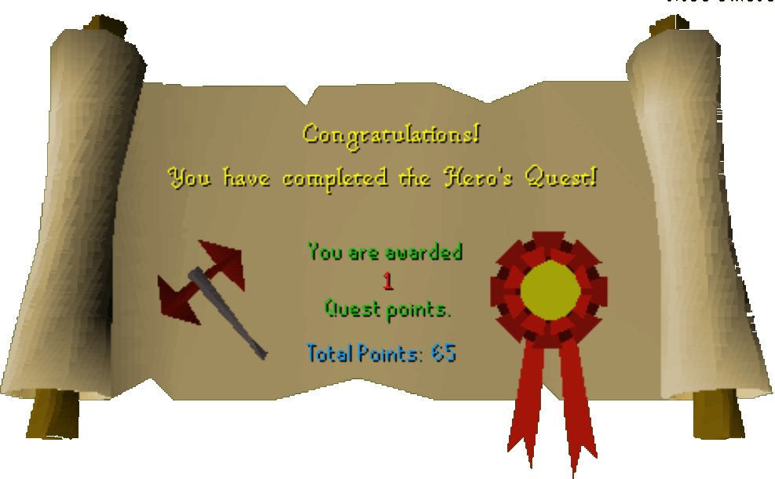

Hero's Quest
Description: Prove you are worthy to enter the hero's guild. To prove your status as a hero you will need to obtain a number of items. There are many challenges standing between you and these items.Difficulty: Experienced
Length: Long
Required Quests:
- Shield of Arrav
- Lost City
- Merlin's Crystal
- Dragon Slayer
Items & Skills Needed:
- 55 Quest points
- 50 Mining
- 25 Herblore
- 53 Fishing (or 50 and a fishing potion)
- 53 Cooking
- Some form of Ranged or Magic attack method
Recommended:
- 43 Prayer
- Food
Reward: 1 Quest point, 3,075 Attack XP, 3,075 Defence XP, 3,075 Strength XP, 3,075 Hitpoints XP, 2,075 Ranged XP, 2,725 Fishing XP, 2,825 Cooking XP, 1,575 Woodcutting XP, 1,575 Firemaking XP, 2,275 Smithing XP, 2,575 Mining XP, 1,325 Herblore XP, access to the Hero's Guild, ability to buy a Dragon Axe and Mace
Instructions:
Speak to Achetties about joining the guild. Achetties will tell you to get three items. These are Firebird's Feather, Cooked Lava Eel and the Master Thieves Armband. You can get these in any order.
Firebird's Feather
You will first need to get Ice Gloves. Bring everything you would need to beat a level 102 monster. You can use prayer and magic. Bring lots of food, as it is not a direct passage to killing the Ice Queen. Also, bring along a pickaxe.
Go to White Wolf Mountain (west of Taverley, east of Catherby). Get on the mountain at the south end, and go north until you come to a rockslide. Use your pickaxe on the rockslide to get past. Once you are past it you will be near 3 ladders and level 53 ice warriors.
Use the Southern ladder, go take the southwest tunnel until you come to a ladder, go up it. You will know it is the correct one if there are level 54 ice giants there. There should be 2 ladders besides the one you went came up, take the eastern ladder down, go down the tunnel north, it is very long and has level 61 ice spiders in it that do not appear on your mini map. This tunnel makes a loop and dead ends at a ladder. Go up, then down the only other ladder. Continue until the tunnel opens into a large room with a lot of level 53 ice warriors and the Ice Queen.
She is level 102 and may be aggressive, depending on your level. Kill her and she will drop the Ice Gloves. (Note: You might want to use a teleport spell to get out once you get the gloves.) If you do not have teleport runes, go back through the long tunnel to the ladder that leads to the Ice Giants, use the northern ladder here to go back into the caves. Follow this area north until you come to a ladder. Go up and you will be out of the caves, past the ice warriors and rock slide. Go to the bank and put all armour and weapons into the bank but keep the Ice Gloves as you will need these.
Go to Port Sarim and catch a boat to Entrana (talk to a Monk of Entrana). The firebird is running around on the northeastern part of the island. This is on the north side of the bridge. It is very low level, so you should have no problem with it if you can beat the Ice Queen. Kill it and it will drop the firebird's feather. Make sure you are wearing the Ice Gloves; without them, you won't be able to pick the feather up!
The Master Thieves Armband
You will need the help of a friend. If you're in the Phoenix gang then you will need the help of a friend in Black Arm gang; if you're in the Black Arm gang you will need the help of a friend in the Phoenix gang.
For Black Arm Gang Member:
Go to Varrock and speak to Katrine about the Master Thieves Armband. She will tell you that the gang password is "four leaf clover."
She will tell you that you have to steal ScarFace Pete's Candlesticks. ScarFace Pete lives in Brimhaven on Karamja. You will need to get the I.D. paper first.
Go to Palm Street in Brimhaven and there is a gang office. Talk to someone there and he will give you the ID paper, which you need to get into ScarFace Pete's mansion.
Before going to ScarFace Pete's Mansion, you need to get a Black Large helmet, Black Plate Mail Chest (male), and Black Plate Legs. Wear them when you get to the Mansion (you can buy the helmet and legs at the Champion's Guild, and the plate mail at the Varrock Armor Shop).
When you try to enter ScarFace Pete's Mansion you will be stopped by Garv. You must show him the ID papers and then he will let you in.
Go talk to Grip inside and ask him if there is anything you can do around there. He will give you a "miscellaneous key." This key you MUST give to your Phoenix friend who is helping you with this quest. Search the cupboard; this will lure the Grip in where the Phoenix member can range him (Grip is level 26); once he dies, Grip will drop some keys.
Grab the keys and go to the Treasure room, where you will find the Candlesticks. Give one Candlestick to your Phoenix friend. The only way to get out is the door you came in; your Phoenix friend should meet you there.
Go back to Varrock and talk to Katrine again. She will give you the Master Thieves Armband.
For Phoenix Gang Member:
Go to Varrock and speak to Straven about the Master Thieves Armband (Straven is the doorkeeper in the basement of the Phoenix Gang hideout). He tells you to steal Cheat Program Face Pete's Candlesticks and the Phoenix gang has an associate in Brimhaven on Karamja. Their names are Charlie the Cook and Alfonse the Waiter in the pub called Shrimp and Parrot. Straven also gives you a secret password; the password is "Gherkin."
Make sure first that you have the key from your Black Arm Gang friend. This is the miscellaneous key.
You will need a bow and arrows before going to the Shrimp and Parrot pub. When you are at the Shrimp and Parrot pub, talk to Alfonse the Waiter and Charlie the Cook. Don't forget to give the password.
Charlie the Cook will tell you about a secret panel (the secret panel is at the west end of the kitchen.) You must go through this panel to where there are some Guard Dogs; these are level 44 and are quite aggressive. Get past these and into the mansion (the door on the west side of the yard.) Once inside, use the key (from your Black Arm Gang friend) on the door to the north. This puts you in a closet with a window into into the room with the cupboard. Arm the Bow, shoot through the holes at Grip (level 26) and kill him. He will drop the keys for your Black Arm gang friend.
Your Black Arm gang friend will get the Candlesticks and trade you one of them. Go back to Varrock and talk to Straven and he will give you the Master Thieves Armband.
NOTE: You cannot take a candlestick from someone else. Katrine will know you didn't do the quest properly and will not give you the band.
Cooked Lava Eel
Go to Port Sarim and talk to Gerrant in the Fishing Shop and ask him about catching lava eels. He will tell you how to make an Oily Rod. He will give you a bottle of Blamish Snail Slime. You will need a vial filled with water, and a Harralander herb. For the vial and herb look in the herblore guide.
Once you have those three things use the Harralander herb with the vial of water, then use the unfinished potion with the Blamish Snail Slime. Use the oil with a REGULAR fishing rod. NOT A FLY FISHING ROD. Now you have an oily rod. YOU MUST BRING 1 BAIT PER LAVA EEL THAT YOU WANT TO COOK!!
To find the Eel, you need to go to the Taverley Dungeon (south of Taverley). For this part you will need your oily rod, an anti-dragon breath shield, a antipoison potion (look in the Herblore guide), and really good armor and a weapon, and lots of food; don't forget some bait for fishing the lava eel.
Keep walking deeper and deeper, you will pass level 18 skeletons, level 22 skeletons, level 19 ghosts, some level 31 black knights, level 42 animated axes, and level 20 poison scorpions. At this point, you should be at some lava with a bridge over it. Continue southwest to a large room, now go south and you will enter a large fortress with carpets, long tables, and a few level 31 black knights.
Go through the large doors to the south, then go east into a jail area find the Jailer (level 42) and kill him, he will drop a key. Use the key with the jail cell with the Velrak the explorer in it. Talk to him and ask about places to explore. He will give you a Dusty Key. Now head north until you get back to the poison scorpions.
Go across the bridge over the lava, then go north east up past the level 48 chaos dwarves and the level 82 lesser demons. Get past them and use the Dusty Key you got from the prisoner on the door to the west of them this puts you in a room with level 43 baby blue dragons and level 99 blue dragons. Run across the room and down the tunnel until you come to some level 43 baby blue dragons next to lava. This is where you fish for Lava Eel. The fishing spots are somewhat difficult to see, but they are basically orange spirals in the lava.
Use your oily rod to catch a few eels. Now either go back the way you came in or teleport out. Find a range or fire, and cook the Lava Eel.
Finishing the Quest
Go back to the Hero's Guild and talk to Achetties. Give her the three items: Firebird Feather, Cooked Lava Eel, and Master Thieves Armband.
Congratulations! You have finished the Hero's Quest, and can now enter the Hero's Guild!
Congratulations, Quest Complete!

This quest guide was written by Jarik C-Bol, Elyria1, jtfa0007, and hckernshadow. Thanks to DRAVAN for corrections.
This quest guide was entered into the database on Tue, May 11, 2004, at 08:33:53 PM by stormer and CJH and was last updated on Fri, Oct 08, 2004, at 11:57:09 PM.